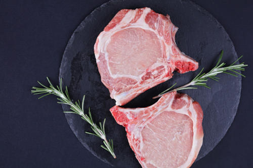
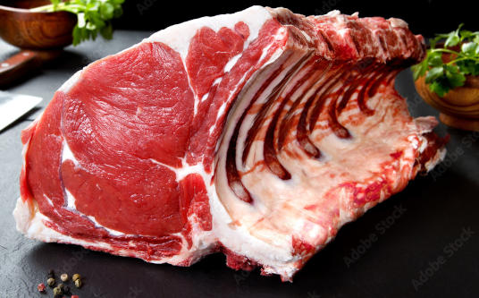
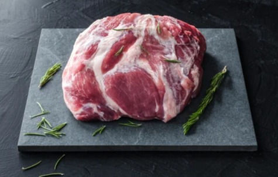
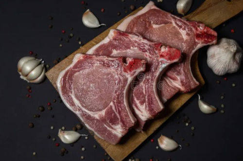
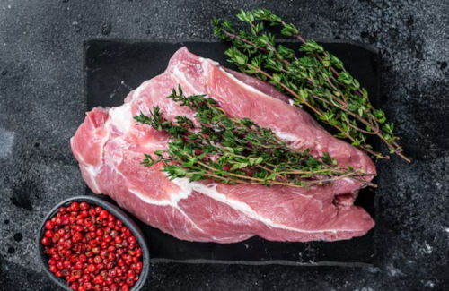
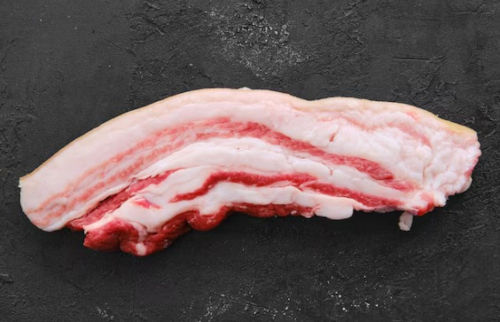
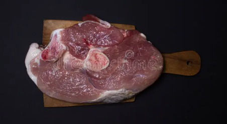
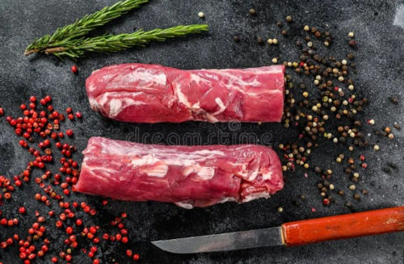
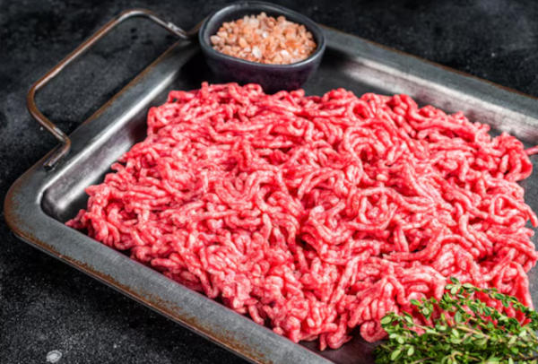

Chuleta
Corte muy solicitado por su sabor y facilidad de preparación, ideal para plancha, fritura o parrilla.
L. 95Ofrecemos opciones ideales para cocinar en casa, vender o preparar reuniones con excelente rendimiento y sabor.

Corte muy solicitado por su sabor y facilidad de preparación, ideal para plancha, fritura o parrilla.
L. 95
Corte jugoso perfecto para parrilladas y horneados, con excelente sabor al marinar o asar lentamente.
L. 105
Corte con buen contenido de grasa que aporta sabor intenso en guisos y preparaciones tradicionales.
L. 85
Carne magra y suave ideal para hornear, rellenar o preparar filetes elegantes.
L. 115
Corte versátil con buen equilibrio entre carne y grasa, ideal para cocción lenta y recetas caseras.
L. 90
Corte con alto contenido de grasa que aporta textura crujiente y gran sabor en diversas preparaciones.
L. 100
Ideal para hornear completa o en porciones, muy utilizada en celebraciones y eventos familiares.
L. 110
Corte suave y fino, excelente para preparaciones rápidas y presentaciones de alta calidad.
L. 120
Opción práctica para recetas caseras como albóndigas, rellenos y guisos de uso diario.
L. 85| Producto | Fortaleza | Ideal Para | Disponibilidad |
|---|---|---|---|
| Chuleta | Sabor y Rapidex | Plancha o fritura | Disponibilidad diaria |
| Costilla de cerdo | Jugosidad Intensa | Parrilla y Horno | Frecuente |
| Lomo | Carne magra | Horno y filetes | Frecuente |
| Cuello | Sabor tradicional | Guisos y estofados | Según pedido |
| Paleta | Buen rendimiento | Cocción lenta | Frecuente |
| Panceta | Textura crujiente | Asados y frituras | Frecuente |
| Pierna | Ideal para eventos | Horno | Según pedido |
| Solomillo | Suavidad premium | Plancha y sartén | Frecuente |
| Carne molida | Versatilidad | Recetas diarias | Diaria |